Our Team
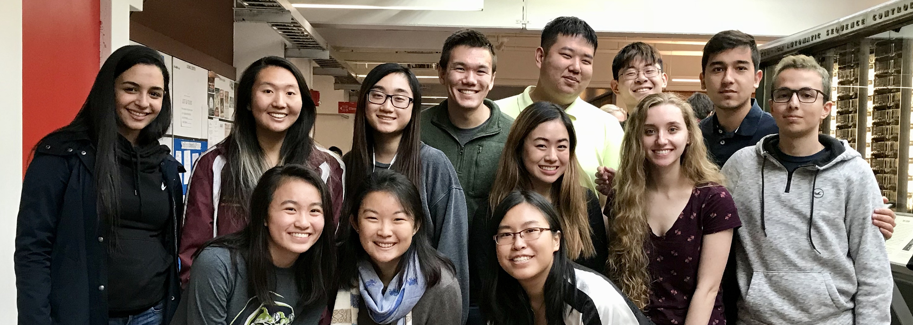
This year's Science Olympiad Invitational at Harvard College is completely run by a team of Harvard undergraduate students. Students range from freshmen to seniors and are majoring in concentrations ranging from biology to economics. Without the hard work and dedication from our team, this year's event would not be possible.
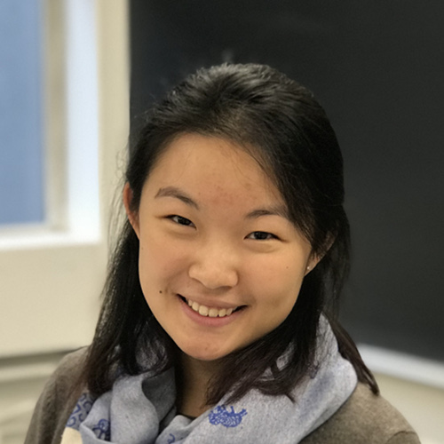
Shirley Lin '19
Shirley is a junior studying Neurobiology. In high school, she lived and breathed Science Olympiad, and could often be found consuming copious amounts of bagel chips after a long day of 5 events. She’s done too many events to recall, but her favorite was Forensics. On campus, she also serves as a director for the Harvard Summit for Young Leaders in China conference run by the Harvard Association of U.S.-China Relations impacting over 1300 students every August. When not speed-walking from classes to meetings, Shirley enjoys drinking tea, watching Friends for the tenth time, and playing piano.
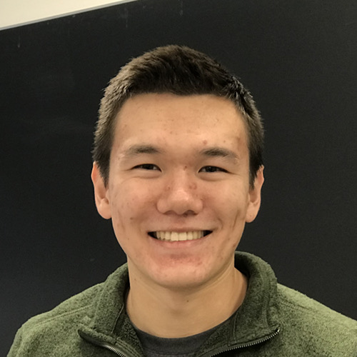
Cameron Akker '18
Cameron is a senior at Harvard College studying electrical engineering with a background in both computer science and mechanical engineering. Cameron comes from Redmond High School in Redmond, Washington and was part of his Science Olympiad team for 3 years. He primarily competed in Thermodynamics, MagLev, and Robot Arm among other events. Cameron has also worked at both Apple and Formlabs, in roles ranging from engineering project management to hardware design.
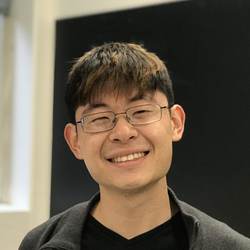
Bovey Rao '19
Bovey is a Junior at Harvard College studying Molecular and Cellular Biology and Computer Science. Originally from Salt Lake City, Utah, he has a professed love of nature, food, and biology. During high school Science Olympiad, he competed in a wide range of physics and zoology events with a strong preference for Entomology and Thermodynamics. When not trying to catch up on sleep, Bovey runs one of the student restaurants on campus, conducts research on ALS, and organizes conferences through the Harvard Association for US-China Relations.

Lily Lu '19
Lily Lu grew up in Boston, Massachusetts, and is currently a junior at Harvard College studying Integrative Biology. Lily spent the majority of her time in middle and high school competing with and organizing her school’s Science Olympiad team, where she met some of her closest friends and discovered her passion for birds through the ornithology event. Outside of Science Olympiad, Lily is also an editor of Ecdysis, a recently established Harvard undergraduate journal on the intersection between art and science, and plays piano accompaniment for the Harvard Noteables, a non-audition show choir. In her free time, Lily enjoys drawing, playing piano, taking photos of her pet cat, and looking at pictures of fat birds.
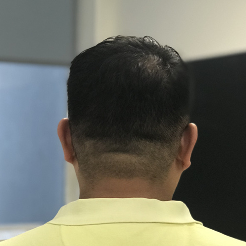
Kevin Bao '19
Kevin Bao is from Walnut in the LA region. He has had a lifelong passion for biology and just generally discovering new morsels of knowledge. He competed for Troy High School Science Olympiad and today spends the bulk of his day lounging about on obscure pages of Wikipedia.
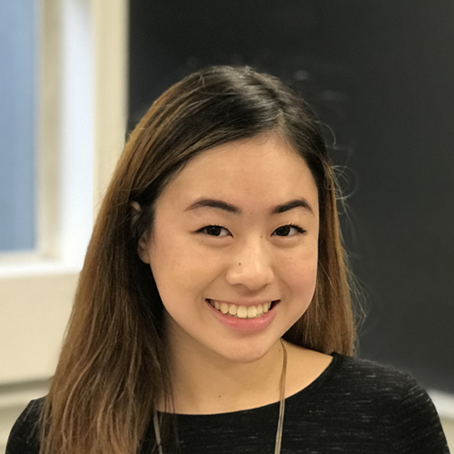
Jeanna Qiu '20
Jeanna Qiu is a sophomore in Harvard College, studying Chemical and Physical Biology with a secondary in Sociology. She has been involved in Science Olympiad since she was 11 years old and her favorite event was Experimental Design. In addition to HCSO, Jeanna plays cello in the Harvard-Radcliffe Orchestra and conducts research about the bacterial cell wall at Harvard Medical School. In her free time, Jeanna enjoys exploring Boston and finding good dessert restaurants.
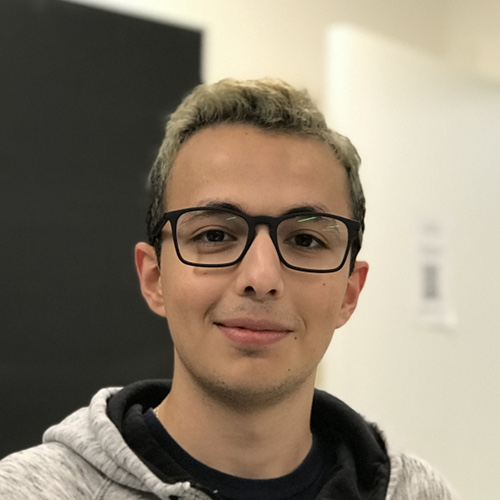
Haig Cholakian '21
Haig is from Dubai and is currently a freshman at Harvard College planning to study electrical engineering, applied math, and/or computer science. In high school, he did not compete in Science Olympiad, but he is excited to be part of Harvard’s first SciOly invitational. When he’s not busy with classes and meetings, he can be found binge watching TV shows, baking in his dorm room, and trying new foodie spots in the Square.
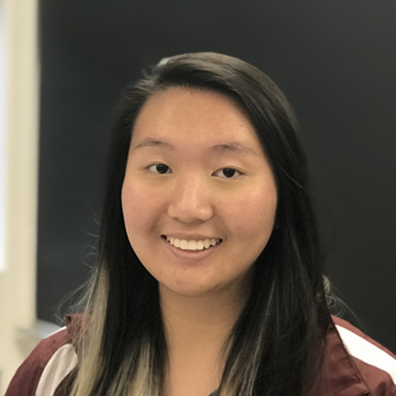
Vivian Lee '21
Vivian, hailing from Los Angeles, California, is a freshman at Harvard planning to study Human Developmental and Regenerative Biology. For three years in high school, she spent many weekends with her beloved Science Olympiad team competing in Disease Detectives, Experimental Design, Chemistry Lab, and Anatomy and Physiology, eating snacks, and making puns. When she isn’t staying up late to work on problem sets, Vivian enjoys reading Neil Gaiman novels, watching anime, and napping.
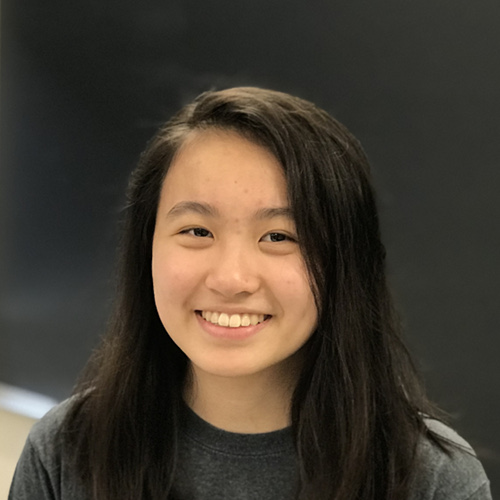
Karissa Huang '21
Karissa Huang is a freshman at Harvard, originally from Cleveland, OH, and will most likely study Applied Math. Karissa has been doing Science Olympiad since the tender age of 10 and in high school, Science Olympiad was a large part of her life. Her favorite events were Chem Lab and Cell Biology. Outside of SciOly, Karissa plays flute in the Harvard Radcliffe Orchestra, and tutors. In her free time, Karissa enjoys going for a swim and/or watching Sherlock.
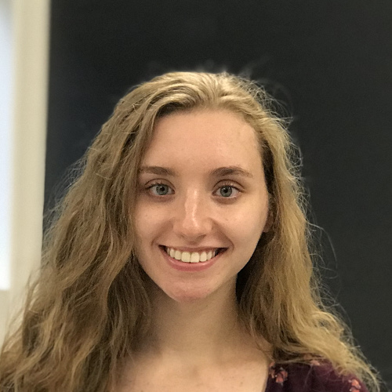
Grace Greason '21
...
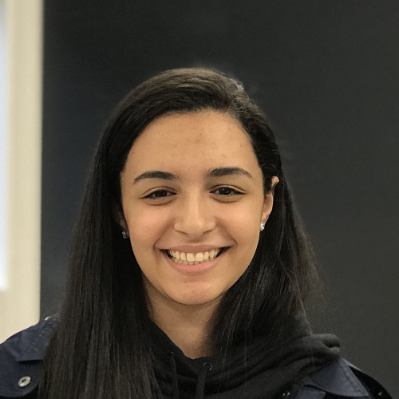
Marina Andrawis '21
Marina Andrawis is from Staten Island, New York and is a freshman at Harvard College. Marina is planning to study Neurobiology, but also enjoys studying Psychology and Global Health and Public Policy. Marina has participated in Science Olympiad for most of her high school years, and participated in events such as Write It Do It, Wind Power, Disease Detectives, Chemistry Lab, and Anatomy & Physiology. Outside of SciOly, Marina enjoys playing basketball, drinking coffee, and watching thrillers.
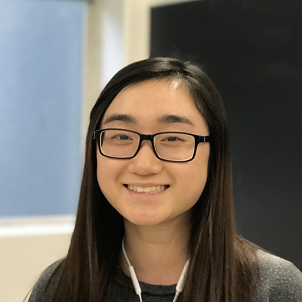